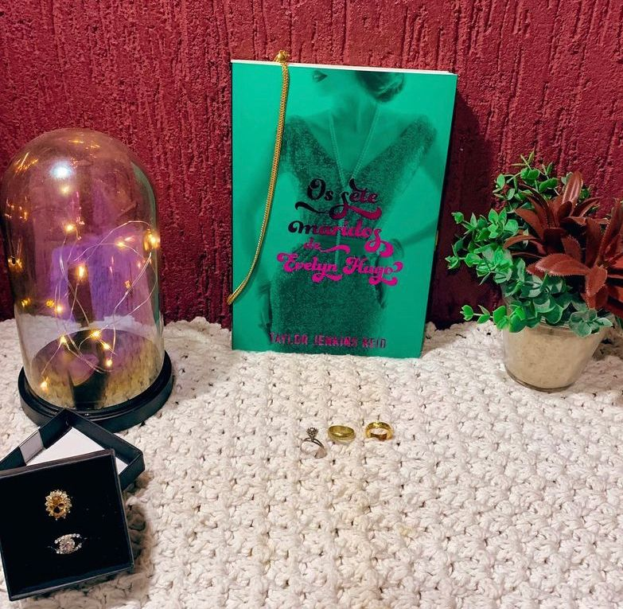

Os Sete Maridos de Evelyn Hugo
(Taylor Jenkins Reid - Paralela)
⭐⭐⭐⭐⭐
⚠️Gatilhos: Violência Doméstica.
A lendária estrela de Hollywood, Evelyn Hugo sempre esteve sob os holofotes -- seja estrelando uma produção vencedora do Oscar, protagonizando algum escândalo ou aparecendo com um novo marido... pela sétima vez. Agora, prestes a completar oitenta anos e reclusa em seu apartamento no Upper East Side, a famigerada atriz decide contar a própria história -- ou sua "verdadeira história" --, mas com uma condição: que Monique Grant, jornalista iniciante e até então desconhecida, seja a entrevistadora. Ao embarcar nessa misteriosa empreitada, a jovem repórter começa a se dar conta de que nada é por acaso --e que suas trajetórias podem estar profunda e irreversivelmente conectadas.
O que eu posso falar sobre este livro maravilhoso? Os Sete maridos de Evelyn Hugo foi o meu primeiro livro da Taylor Jenkins Reid e antes da leitura, não entendia o “hype” com o livro e tinha muito medo de o livro ser ruim e totalmente sem ser sentido.
Como eu disse no post anterior a autora tem uma habilidade absurda na construção de histórias e principalmente: na construção de PERSONAGENS.
A narrativa ocorre de forma fácil e espontânea e mesmo com temas reflexivos e as vezes pesados a leitura não se torna cansativa. Aqui vamos conhecer a história de Evelyn Hugo uma mulher que foi atrás do seu sonho de atriz na década de 50 e já posso adiantar que não foi fácil ! Vamos acompanhar de perto tudo que mulheres passavam e ainda passam perante toda sociedade patriarcal mas, também vamos ver como algumas coisas foram mudando ao longo do tempo.
Temáticas como violência doméstica, o papel da mídia que manipula e é manipulável, sexualidade, comunidade LGBTQIA+ (sigla que na época nem pensava ou nem podia existir) estão presentes no livros de forma tão realista. Também não podemos esquecer que Evelyn Hugo, assim como os outros personagens são humanos e palpáveis, passíveis de erros e sentimentos sórdidos.